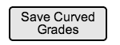

2.6.3 Adjust Curve View
When in the Stats and Graphs view, the grader can apply a curve to the particular assignment/quiz/test that he/she is viewing. The interface for adjusting the curve can be seen in Figure 2.6.3 A, below.
Figure 2.6.3 A: Adjust Curve View.
The top button that says 'Add Percentage Curve' with the ticker on the right side of it allows the grader to adjust all of the students' grades with a unified percentage. For an example, if the grader clicks the 'Up' ticker five times, it will increase all the students' grades by 5%. When the grader makes these adjustments, the graph will show the changes in the grade distribution in real time. Figure 2.6.3 B shows this happening.

Figure 2.6.3 B: Adjusted Statistics and Graph View.
Figure 2.6.3 B demonstrates how after the curve is adjusted the statistics and bar chart graph are adjusted accordingly.
Below the 'Add Percentage Curve' button, there is the 'Custom Curve Button'. When pressed, this button allows the grader to cutomize the curves in less standardize way.
Figure 2.6.3 C: Add Custom Curve Button.
After the user hits the 'Add Custom Curve' button shown in Figure 2.6.3 C, an auxillary pop-up screen appears where the user can make custom adjustments to how they want the curve to be applied. Figure 2.6.3 D below shows this view.
Figure 2.6.3 D: Create Custom Curve View.
In the figure above the grader can drag the red buttons with the grade on them up or down to adjust where the line falls for that specific grade. The student will get whichever red grade line is below their score. For an example, if a student gets 77% on the quiz above, the first red line below 77% is the C-, so C- is their grade after the curve.
As seen above, some of the red grade buttons are on the same line. This happens when the grader tries to drag a lower grade above a higher grade, or a higher grade below a lower grade. When this happens, both grades are dragged next to each other. This feature makes sure that the different letter grades stay in the correct order. The example shown in Figure 2.6.3 E (below) demonstates what happens if the grader were to drag the 'C button' up to 94%, and the 'C- button' down to 50%. All the grades that are 'higher' than a C are are dragged upwards on the same line with the C, which makes sure the ABCDEF grading scheme stays in the correct order. Also, when the C- is dragged downwards, all the grades considered 'lower' than a C- are dragged down with the C-, respecting the grading scheme.
Figure 2.6.3 E: Results of Curve Adjuster Movements.
The above figure demonstrates what the bar chart / curve adjusters look like after the C is dragged up to 94% and the C- is dragged down to 50%.
To the right of the bar chart in Figure 2.6.3 D, is a check box labeled 'Add +/- Adjusters'. When the grader toggles this check box, it gives the grader the option to not have plus or minuses corresponding with the letter grades.
Figure 2.6.3 F: Plus/Minus Grade Toggle Option.
When the 'Add +/- Adjusters' check box is not checked (like in Figure 2.6.3 F), the grader will not see any of the red buttons/lines with a plus or minus on them. Figure 2.6.3 G below shows what the bar chart will look like when the check box is unchecked.
Figure 2.6.3 G: Bar Chart Without +/- Adjusters.
The grader now only has the option to adjust curves for grades without plus or minuses.
After the grader makes the desired changes to the curve, they can then apply their changes with the 'Apply Curve' button, or cancel there changes with the 'Cancel' button as shown in figure 2.6.3 H.
Figure 2.6.3 H: Cancel or Apply Curve Buttons.
After the grader applies their curve or cancels creating a custom curve, the auxillary dialogue window disappears and the grader is taken back to the main stats and graphs view.
In main Stats and Graphs View, the grader has a 'Saved Curved Graphs' button available. This button is showed in figure 2.6.3 C below.

Figure 2.6.3 H Saved Curved Grades Button.
This button allows the grader to apply the curve that they have set, which will save all of the students' scores in the main spreadsheet for that class.
Prev: Stats View
| Next: Student Functions
| Up: Stats and Graphs View
| Top: index